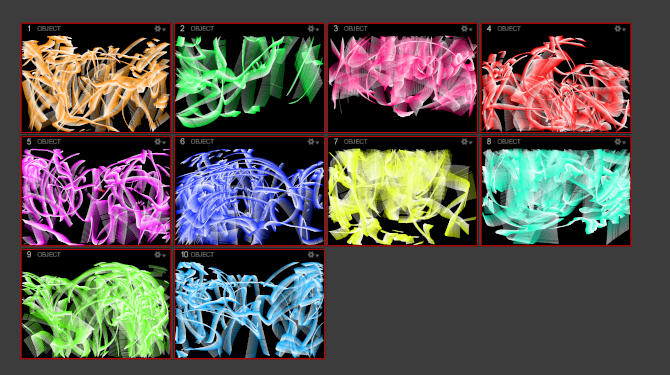

Motion Capture Room Tutorial¶
This tutorial gives basic information on how to collect data, set markers, and calibrate the motion capture room (mocap room). If more information is needed or any recommendations need to be made speak with the students responsible for the mocap room. They can be found in the lab duties section of the magicc lab wiki, and their duties include training operators, documentation, maintenance, calibration, and upgrade recommendations.
Collecting Data¶
-
The mocap system software is set up on the windows computer between the flight room and the conference room. Near the computer is a gray Netgear box that is used for the mocap system. Plug in the power to that box.
-
Open the program Motive, which can be found on the desktop. Circular lights on the mocap cameras around the lenses should come on soon after you open the program.
-
In the view tab, select the assets pane.
-
Be sure that an appropriate calibration is being used. This is usually the most recent calibration. This can be done by going to file/open and then selecting the calibration file, which is usually saved to the Desktop. Alternatively, the most recent calibrations used can be found near the bottom of the file tab. A new calibration should be done every month or two. The students assigned to the mocap room should periodically do this, but if you need to do the calibration see the section in this document on calibration.
-
If the markers for your vehicle(s) or object(s) have already been set, check the box of each object of interest. You should see the markers on the perspective view. If they have not been set, refer to the setting markers section of this document.
-
In the devices pane, it is suggested to change the camera frame rate to 100 Hz to reduce network congestion.
-
Start a roscore on your device.
-
(This step requires that the
optitrack_vrpnpackage andvrpnlibrary are installed. If you have not installed those, see the instructions below). Be sure that both the windows computer and your device are connected to the Magicc network. Open a seperate terminal and type the commandrosrun optitrack_vrpn node -
ROS topics will be published to your device with the object's pose. The topic
<marker name>_nedpublishes the pose in the NED frame, and the topic<marker name>_enupublishes the pose in the ROS standard ENU frame. These NED and ENU frames are mapped from Motive's native frame, which is X north, Y up, and Z east. -
When you are finished be sure to unplug the mocap system box from power.
Setting Markers¶
-
Place the markers, reflective balls, on your vehicle or object in an asymmetric pattern. This requires at least 4 markers. Also be sure that all of the markers are easy to see and not hidden by the object's physical features. Avoid touching the balls with your fingers, as the oil will impede their detection. Each marker is worth about $5 so be careful. Currently, the markers and their adhesives can be found in a box in the flight room in the far corner white cabinet.
-
Follow steps 1-4 in the collecting data section of this document.
-
By default, Motive will place the origin frame at the centroid of the markers, with the axes aligned with the room axes. Place the object in the middle of the mocap room to be easily seen, and lined up with the room's axes. Some orange points represent markers and should be seen in the perspective view. Select all of the markers for your object, right click one of them, and under rigid body select 'create from selected markers'. If necessary, refine the origin or orientation of the marker set in the "Edit" tab on the left pane.
-
As always, be sure to unplug the power from the mocap system box.
Calibration¶
-
Follow steps 1-2 in the collecting data section of this document.
-
Select the layout drop down menu and then select calibrate.
-
Take all of the markers out of the room. The camera preview windows can help you see if you have missed any. One helpful tool in determining where missed markers are is the video type grayscale. This mode will help you to see other objects near the markers. You can switch to it on a specific camera by right clicking one of the camera preview windows, expanding the Video Type menu, and then selecting grayscale mode.
-
Once you are sure that everything is out, hit the clear mask button. After clearing the mask, check each camera to make sure no other markers are visibile. It is possible for markers outside of the mocap room to be seen by the cameras.
-
Next hit the mask visible button. This will mask pixels in each camera that pick up reflective surfaces (that aren't dots) in the mocap room.
-
The next step is to start wanding. To do this, there is a wand in the white cabinets in the flight room as well as a rod that can be attached to it to improve your reach. This wand has 3 markers on it that are used to "paint" the entire view of the cameras; this is called wanding. To start, hit the start wanding button. The camera preview windows will change to show the areas you have "painted" over.
-
Begin covering the entire mocap room with the wand. A good method is to start by waving the wand through each part of the room without really referencing the camera preview windows. Try to move your body so that you are not always blocking off a specific camera from the view of the wand. This should give you a good starting point covering. Then look at the cameras' circular lights. The areas that have been covered are blue, while the uncovered areas not lit up. Try to fill all of the cameras. Then finally, look at the camera preview windows and fill in the spots that have not been covered.
-
When finished, press the calculate and then apply buttons. A window should pop up telling you what the quality of the coverage on this calibration is. It should be excellent. Below is an example of excellent coverage:
 -
Now you need to set the ground plane. The ground plane is also contained in the white cabinets in the mocap room. Place the ground plane on the marked origin in the room. Place the x axis facing the North wall.
-
Switch over to the ground plane on the camera calibration window. There should be default values of 19 mm for the ground plane calibration square vertical offset and 6 mm for the ground plane refinement vertical offset. After verifying these values press set ground plane. This will bring up an export camera calibration window. The default should already have this format, but the naming convention is as shown below. Also it is of a file type .cal. Be sure the date is correct.
Calibration Exceptional (MeanErr 0.490 mm)2019-08-06 5.34pm -
As always be sure to unplug the camera system.
VRPN Installation¶
-
Clone the following git repository into a catkin workspace and be sure to source it. https://github.com/byu-magicc/optitrack_vrpn
-
It is likely that the vrpn dependency has not been installed. To install it input
sudo apt install ros-noetic-vrpn